Willkommen!
Ich mache responsive, stabile und
barrierefreie Webseiten. Schau Dich um, wenn Du eine Webentwicklerin suchst.
Dazu habe ich ein paar meiner liebsten Berlin-Fotos mitgebracht.
Über mich
Stabile, datensparsame, responsive und barrierefreie Webseiten .
Dies sind die Schlagworte in der Webentwicklung, die ich wichtig finde.
Ich finde, Webseiten sind anständig, wenn sie: stabil sind, nur so viele Daten wie nötig enthalten, auf Handys, Tablets und PCs gut aussehen und zugänglich für alle Menschen sind, die sie besuchen.
Jeden Tag arbeite ich daran, immer bessere Webseiten machen zu können.
Zum Testen der Webseiten verwende ich Google Developer Tools wie 'Lighthouse'. Dort lasse ich die Suchmaschinenoptimierung, die Leistungsfähigkeit und die Benutzerfreundlichkeit der Webseite für Menschen mit Behinderung bewerten. Für den letzten Punkt verwende ich zusätzlich eine Browser-Erweiterung namens 'Accessibility Insights'. Außerdem teste ich meine Webseiten mit einer Screenreader-App (Vorlese-App für Sehbehinderte).
Was ich zur Zeit mache
Jeden Tag lerne ich Neues über Webentwicklung und tüftele an Projekten, um zu sehen, wie es funktioniert und was noch damit möglich ist
Auf meinem Weg Webentwicklerin zu werden, bin ich bisher so weit gekommen, dass ich gute, statische Webseiten machen kann, die wie eine “Online-Visitenkarte” oder eine “Online-Broschüre” sind. Ich arbeite daran, auch aufwändigere Websites zum Beispiel mit Mitglieder- bzw. Kundenlogin und Shop machen zu können. Auf jeden Fall immer anständige Webseiten: Für alle Bildschirmgrößen, für alle Menschen, datensparsam und stabil.
Zusätzlich zu meinen grundlegenden HTML, CSS und JavaScript-Kenntnissen lerne ich seit einiger Zeit das Javascript-Framework Vue.js zur Erstellung dynamischer Webseiten wie Shops, Terminplaner und ähnliches.
Mein Ziel ist es eine Position in einem Webentwickler-Team zu bekommen und gemeinsam mit anderen Menschen zu arbeiten und zu lernen. Bis dahin nehme ich gerne Aufträge für kleinere Projekte an, um ihnen einen tollen Platz im Internet einzurichten.
Hier ist eine Auswahl meiner Projekte zu sehen.
Seit Herbst 2019 bin ich Co-Organisatorin der freeCodeCamp-Berlin-MeetUp-Gruppe. Unsere Dienstage, an denen wir uns alle persönlich treffen, uns austauschen und von einander lernen, mag ich sehr. freeCodeCamp Berlin-Webseite

Was ich in Zukunft machen möchte
Arbeit von zu Hause hat viele Vorteile und ich möchte das auch zu einem kleinen Teil weiterhin tun. Aber ich wünsche mir sehr, einem Team anzugehören, um miteinander und nebeneinander zu arbeiten, voneinander zu lernen, Pläne zu schmieden und daraus resultierende, gemeinsame Erfolge zu feiern.
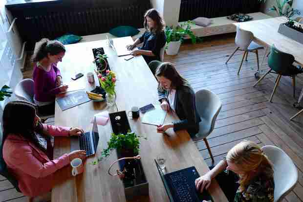Ich möchte dabei sein, wenn neue, tolle Webseiten entstehen oder bestehende weiterentwickelt werden, um Ihr jeweiliges Plätzchen im Internet in strahlendem Licht erscheinen zu lassen!
Nimm Kontakt zu mir auf, wenn in Deinem Team noch jemand gebraucht wird! Zu den Kontaktmöglichkeiten
Von der Schnittmustererstellung zur Webentwicklung
Durch meine Tätigkeit als Erstellerin von Schnittmustern zum Nähen von Kleidung, die ich in digitaler Form unter dem Namen 'Leela Minzz' zum Verkauf anbiete, wurde ich sehr vertraut mit der Arbeit am PC und diversen Programmen. Die Schnittmuster habe ich mit dem Vektorzeichenprogramm 'Inkscape' gezeichnet. Meine erste Webseite habe ich 2005 mit einem Homepage-Baukasten gebaut. Die Zweite einige Jahre später mit selbstgehostetem Wordpress. Und jetzt baue ich Webseiten quasi aus dem nichts!
Die Schnittmustererstellung hat einen Punkt erreicht, an dem ich es nicht mehr verbessern konnte, dadurch fehlte mir die Herausforderung. Daher beschloss ich, Programmieren zu lernen und mit Webentwicklung anzufangen. Mir gefiel und gefällt die Idee, schnell etwas sichtbares vorweisen zu können. Ich erschaffe gerne Dinge. Oft werden sie sehr bunt, da kann ich mich für meine eigenen Projekte schlecht zurückhalten (siehe diese Webseite ;) ), daher finde ich es angenehm, wenn ich eine Designvorlage habe, an die ich mich halten kann. (siehe meine Frontend Mentor Projekte) Meine Projekte bei FrontendMentor.io
Die für mich wichtigsten Quellen zum Lernen und Üben
Dies sind die Webseiten, die ich am häufigsten besucht habe, um zu lernen und zu üben.
Für mich funktioniert es gut, manchmal das gleiche Thema aus verschiedenen Quellen mehrmals zu lernen.
- W3Schools
- freeCodeCamp
- Udemy
- MDN Web Docs (Mozilla Developer Network)
- CSS-tricks
- You Tube
- CSS Battle
- Dev.to
- Frontend Mentor
- World Wide Web Consortium (W3C)
- GitHub Learning Lab
- Vuejs.org
- Vue School
Das sind nur jene, die ich am häufigsten besucht habe. Es gibt noch so viel mehr Wissensquellen.
Wenn Du selbst Webentwicklung lernst und mich etwas fragen möchtest, nimm Kontakt zu mir auf. Kontakt
Skills
HTML
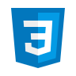CSS
JavaScript
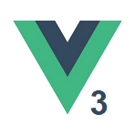VueJs
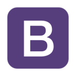Bootstrap
Git
GitHub
Inkscape
Deutsch
Englisch
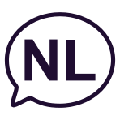Nieder-
ländisch
Projekte
freeCodeCamp Berlin-Webseite
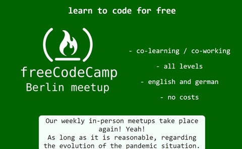 zur freeCodeCamp-MeetUp-Berlin-WebseiteImage-Map Berliner Bezirke
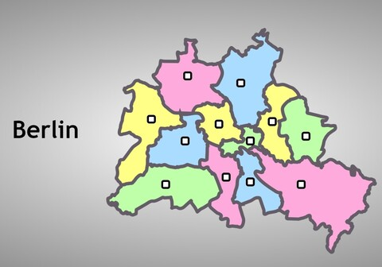 zur Berliner-Bezirke-WebseiteLeela Minzz-Webseite
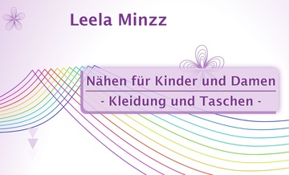 zur Leela-Minzz-WebseiteBootstrap-Seite
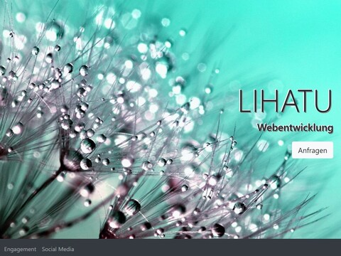 zur Webseite (mit Bootstrap erstellt)Schere-Stein-Papier-Spiel
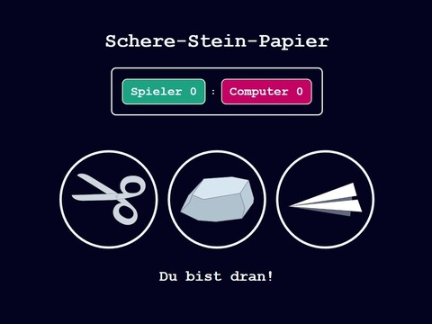 zur Schere-Stein-Papier-WebseiteFrontend Mentor - 3-Column-Component
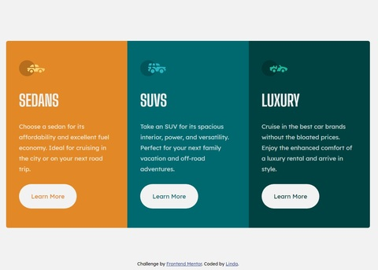 zur 3-Column-Component-WebseiteTypewriter-Effect-Codepen
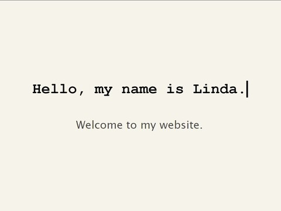 zur Codepen-WebseiteFrontend Mentor - FAQ - Accordion
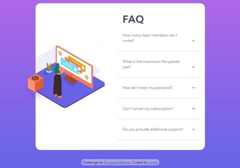 zur FAQ-Accordion-WebseiteFrontend Mentor - Tip Calculator
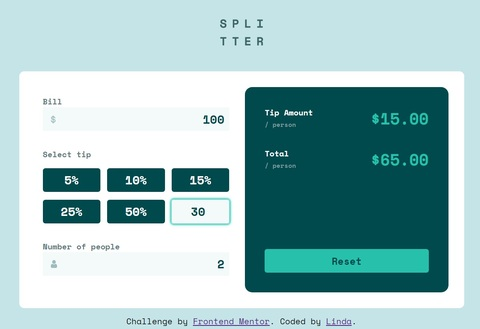 zur Tip-Calculator-WebseiteBrauchst Du eine Webseite oder Hilfe beim Erstellen von Webseiten, nimm Kontakt zu mir auf! Kontakt